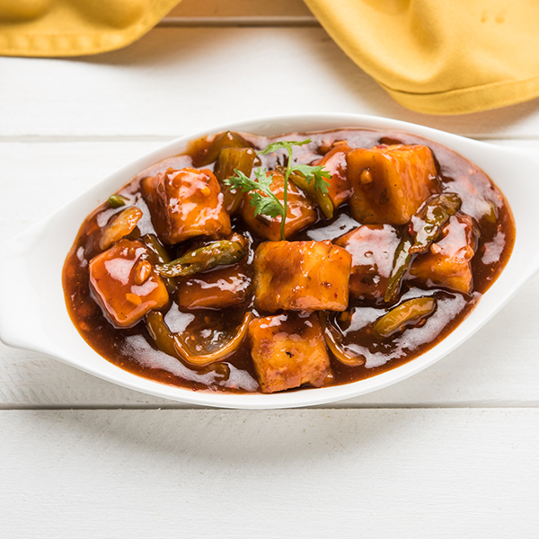

Chilli Paneer Recipe

Chilli Paneer is a dish that you can eat idly as a snack or as a dinner with rice or noodle.
In this recipe, we will go through all the ingredients and procedures that is required to make this awesome dish named 'Chilli Paneer'
Ingredients - for 2 serving
- Paneer(cottage cheese) - 250gm
- Capsicum - 2 of medium size
- Onion - 2 of medium size
- Chilli Paneer masala - 20g
- Cooking oil (refined or vegetable)
Steps
- Cut paneer, capsicum and onion into dice.
- Fry paneer in oil until its outer edges are golden brown
- In a separate bowl, add chilli paneer masala in bowl with 200g of water, mix it well and put it aside. (If you prefer more gravy, you can add more water as of your liking)
- In 2 tablespoon of oil, fry onion and add capsicum after frying onion for a very short while.
- After onions have turn slightly brown, add paneer and masala-water mixture that we have made earlier.
- Cook for 5-7 minutes on medium flames. Stir occasionally
- And we have done preparing a mouth-watering dish! Serve it hot.